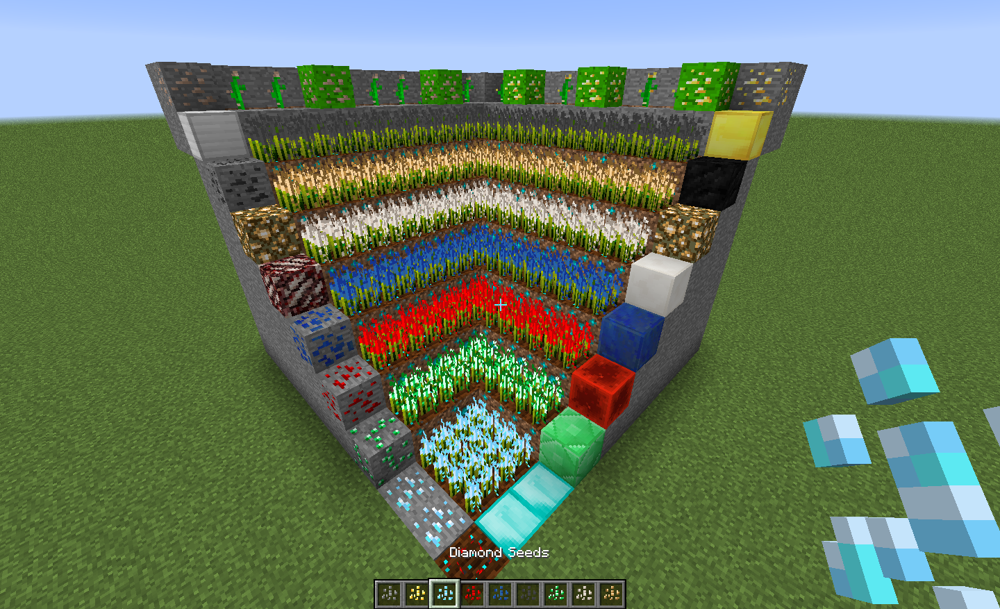

Resynth is a mod designed to provide you with a way to grow every Minecraft resource,
from iron to glowstone and soon to be ender peals, while being completely configurable.
The mod adds two new types of plants, crystalline (wheat), which
grows ore drops that do not require smelting (such as diamond and glowstone) and
metallic (melon), which grows ores (gold and iron). A plant that grows mob drops is
in the works.
Resynth is also completely configurable - so everything from plant growth times to seed drop chances to bonemeal to ore generation - even disabling plant growth can be changed in the config.
Note: Resynth is still in its first stages of development (beta) - some things are bound to
break, some features are not yet implemented (such as mob drops) and values (such
as plant growth time and seed drop chance) still need tweaking, though you can
change them yourself through the configuration settings. While Resynth is thoroughly
tested and should work in most if not all cases - please do keep this in mind.
